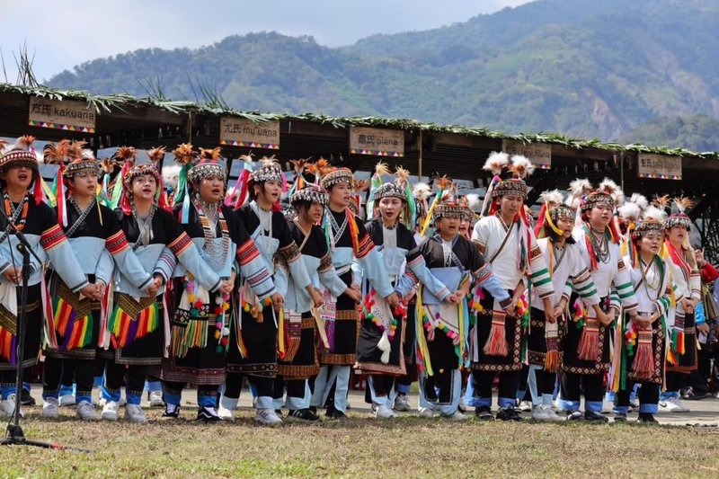

族群介紹
拉阿魯哇族（Hla’alua）主要分布於高雄市那瑪夏區，是台灣南島語系原住民族之一， 與卡那卡那富族關係密切，在語言、文化與祭典上皆有獨特傳承。
傳統上以農耕、採集與狩獵為主要生活方式，並保有象徵祖靈信仰的祭典體系， 特別是著名的「夜祭」與「加冕祭」，展現深厚的文化底蘊。
地理位置
主要聚居於高雄市那瑪夏部落，與卡那卡那富族同屬南島山地族群。
景點特色
| 地點名稱 | 地區 | 特色說明 |
|---|---|---|
| 達卡努瓦部落 | 高雄那瑪夏 | 拉阿魯哇族的主要聚落，保留語言、歌謠、傳統祭典文化。 |
| 南沙魯部落 | 那瑪夏區 | 擁有完整傳統儀式場域，是了解族群文化的重要地點。 |
飲食文化
| 食物名稱 | 主要材料 | 文化說明 |
|---|---|---|
| 小米粥 | 小米 | 祭典中的重要食物，象徵祖靈祝福與豐收。 |
| 野菜料理 | 山菜、蕨類、野果 | 反映族人與山林密切共生的生活方式。 |
照片與影片介紹
部落照片

以上為拉阿魯哇族的衣著特色。
影片介紹
以上為拉阿魯哇族相關介紹影片。